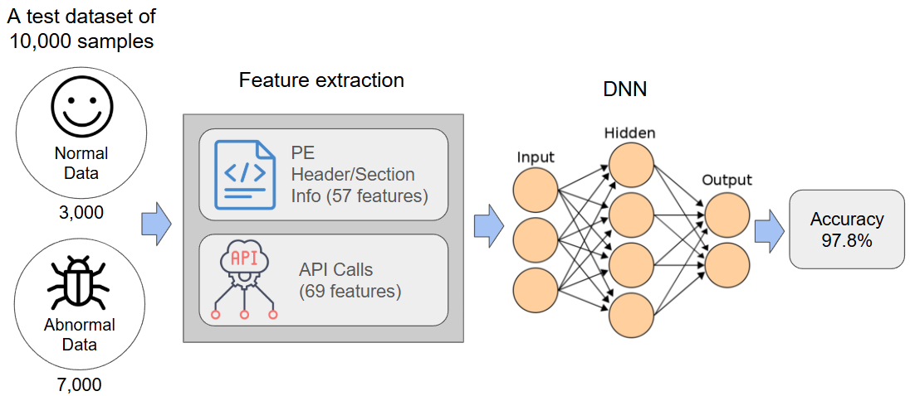

Seonyoung Kim
 Email
Email
 CV
CV
 LinkedIn
LinkedIn
Hello, I am Seonyoung Kim, an AI Researcher in the SoC team at Samsung Research, where I focus on efficient inference of large-scale models and hardware-software (HW-SW) co-design. I have been interested in addressing the challenges of deploying models in resource-constrained systems. I have conducted research on the efficient deployment of LLMs, time-series models, and speech models deployment using various model compression techniques.
My research focus lies in efficient ML/AI, efficient training, optimization, and hardware-aware AI design. Ultimately, I aim to develop highly efficient and widely accessible AI that can advance research and contribute to broader real-world applications.
Previously, I received my B.S. in Computer Engineering from Hongik University, and my M.S. in Computer Science from Korea Advanced Institute of Science and Technology (KAIST), where I was advised by Professor Myoungho Kim.
Contents
Research Background
-
AI Researcher | Samsung Research
Aug. 2022 – Present- SoC Architecture Team
- Focus: Model compression, LLMs, HW–SW co-design
-
Research Assistant (RA) | Korea Advanced Institute of Science and Technology (KAIST)
Sep. 2019 – Feb. 2022- Database Lab, Advisor: Prof. Myoungho Kim
- Focus: Knowledge Distillation, Time-series anomaly detection
-
Undergraduate Researcher | Hongik University
Nov. 2018 – Aug. 2019- Research Lab for Distributed INtelligence and Autonomy (DINA), Advisor: Prof. Young Yoon
- Focus: AI, Data analysis, Distributed system
Publications
-
Bespoke LUT: Non-Linear Approximation for Integer-only Transformer Inference on NPUs

Bespoke LUT uses per-layer dual-range lookup tables to approximate nonlinear operations on NPUs, achieving up to 3.3× speedup with minimal accuracy loss.
-
RaBiT: Residual-Aware Binarization Training for Accurate and Efficient LLMs

ReBiT is a residual binarization framework for LLMs that achieves state-of-the-art 2-bit accuracy and up to 4.49× faster inference on Llama while halving optimizer memory.
-
Generating Small Anomaly Detection Models through Distillation of Long-Term Dependency
Lightweight attention-based model with knowledge distillation and Long-Term Accumulator achieves 95% parameter reduction and 50% faster inference while preserving accuracy in time-series anomaly detection.
-
Knowledge Distillation for Anomaly Detection in Multivariate Time Series Data

Developed an LSTM-based knowledge distillation method for multivariate time-series anomaly detection, reducing parameters by ~60% while maintaining accuracy.
Projects
-
Efficient AI Deployment on NPUs
Aug. 2022 – Present
At Samsung Research, I research hardware-aware model compression techniques, such as ultra low-bit quantization, to enable efficient deployment on NPUs. My work spans large-scale models including LLaMA, Gemma, and speech models.
-

Edge Computing–Based Anomaly Detection in Memory Semiconductor Processes
Sep. 2020 – Sep. 2021
Developed an autoencoder–LSTM system for anomaly detection and remaining useful life (RUL) prediction, enabling predictive maintenance and improved process efficiency.
-
Chemical Mechanical Planarization (CMP) Wafer Defect Detection Project
Dec. 2019 – Jun. 2020
Built a deep learning model to classify wafer states and visualize defect regions with class activation maps, enhanced by generative models for virtual defect wafer images.
-

Neouly Security Project
Dec. 2018 – Jun. 2019
Developed a malware detection model using Cuckoo Sandbox and a Deep Neural Network, achieving 97.8% accuracy and surpassing the top team in the KISA Data Challenge.
-

AI-based Restaurant Recommendation System
Jan. 2018 – Nov. 2018
Built a restaurant recommendation system using Bi-LSTM with Word2Vec embeddings, achieving sentiment-based filtering with 70%+ positive reviews.
Talks & Presentations
-
Internal Seminar (Journal Club) | Samsung Research
Feb. 2023 – PresentPresented papers:- "Addition is almost all you need: Compressing neural networks with double binary factorization", Aug. 2025
- "SmolVLM: Redefining small and efficient multimodal models", Apr. 2025
- "You Only Cache Once: Decoder-Decoder Architectures for Language Models", Nov. 2024
- "LoRA: Low-Rank Adaptation of Large Language Models", Jul. 2024
- "Introduction to LLM: From GPT to Chinchilla and LLaMA", Mar. 2024
- "PTQ4ViT: Post-Training Quantization for Vision Transformers with Twin Uniform Quantization", Dec. 2023
- "cosFormer: Rethinking Softmax In Attention", Jul. 2023
- "FQ-ViT: Post-Training Quantization for Fully Quantized Vision Transformer", Feb. 2023
-
Graduate Seminar | KAIST
Jan. 2019 – May. 2021Presented papers:- "Knowledge Distillation and Beyond: From FitNet and Born-Again Networks to Noisy Time-Series Models", May 2021 [Slides]
- "Knowledge Distillation in Time-series (2)", Nov. 2020 [Slides]
- "Knowledge Distillation in Time-series (1)", Oct. 2020 [Slides]
- "Model Compression and Acceleration", July 2020 [Slides]
- "A Deep Neural Network for Unsupervised Anomaly Detection and Diagnosis in Multivariate Time Series Data", Feb. 2020 [Slides]
- "LSTM-based Encoder-Decoder for Multi-sensor Anomaly Detection", Jan. 2020 [Slides]
Honors & Scholarships
-
Outstanding Teaching Assistant Award | KAIST
Jun. 2020Selected as an Outstanding Teaching Assistant for the 'Data Structures' course in recognition of receiving top-tier scores on end-of-semester student evaluations. -
The Hongik Scholarship ($15,900 in total ≈ 4 semesters) | Hongik University
Aug. 2015 – Sep. 2018Continuously recognized for top academic achievements with a merit scholarship awarded annually. Over four years, I received a total of approximately $15,900, which included two full-tuition waivers for exceptional grades. -
Korea Open Source Software Developers Lab (KOSS) Hackathon (2nd place) | Korea IT Business Promotion Association
Oct. 2016As a member of the Linux perf team, contributed to the open-source kernel tool by analyzing its source code and implementing a visualization feature for the srcline function to improve its usability.
Teaching Assistant
Database System, Graduate Course | KAIST | Mar. 2021 – Jun. 2021
System Programming, Undergraduate Course | KAIST | Sep. 2020 – Dec. 2020
Data Structure, Undergraduate Course | KAIST | Mar. 2020 – Jun. 2020
Extracurricular Activities
-
Vice President, Graduate Student Association | School of Computing, KAIST
Mar. 2020 – Feb. 2021Took a leadership role in organizing departmental events and acted as a key liaison, fostering close communication and a supportive environment within the graduate student community.
MISC
I thrive on new experiences and believe in learning through them. Outside the lab, I stay active with climbing, hiking, and running. I also enjoy traveling, playing the piano, and reading books.